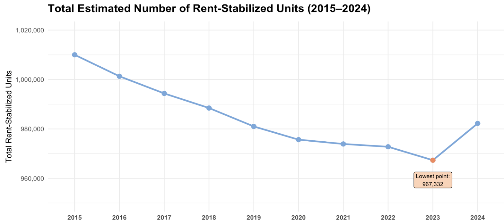
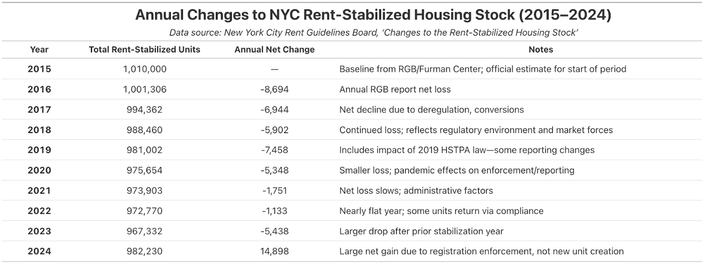
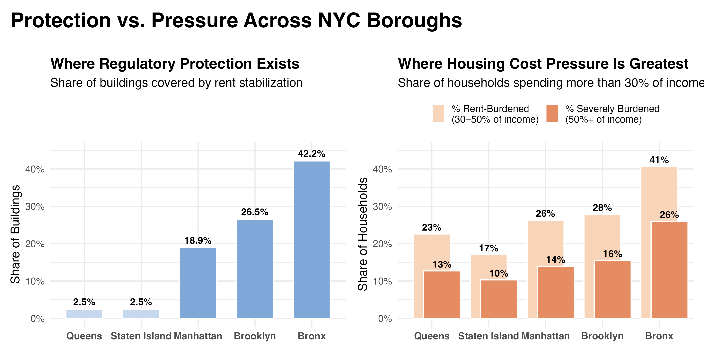

New York City’s rent-stabilized housing stock functions as the city’s primary affordability infrastructure, providing a regulatory buffer that insulates low- and moderate-income renters from volatile market conditions. Yet over the past decade, this system has undergone sustained contraction.
As Figure 1 and Table 1 show, the city lost rent-stabilized units every year from 2015 through 2023—roughly 42,000 units in total—indicating a systemic decline rather than short-term fluctuation. The sharpest contractions coincide with regulatory and market transitions, including the pre-2019 deregulation environment, the implementation of HSTPA, and subsequent shifts in registration behavior. These inflection points reveal how policy change can amplify vulnerability through owner noncompliance, disinvestment, or temporary reporting distortions. The apparent rebound in 2024 reflects intensified registration enforcement, not genuine replenishment of the regulated stock, and therefore should be interpreted as a data correction rather than a stabilization of long-term loss.

Figure 1. NYC’s rent-stabilized housing stock has steadily declined from 2015–2024, reducing a key layer of affordability protection for many households.
The figure below shows how stabilization coverage (Panel A) and affordability pressure (Panel B) diverge across boroughs.

While the operational implications of this attrition are widely understood within HPD, the communication challenges they introduce are equally significant. The department must articulate complex patterns of housing vulnerability to audiences that range from tenants and elected officials to journalists and advocacy organizations, each with distinct levels of technical knowledge and competing narratives about the causes of instability. The CME’s responsibility is to shape a clear, evidence-based account of these trends that guides outreach initiatives, policy discussions, and builds trust in HPD’s preservation efforts. Doing this effectively requires a narrative architecture that is grounded in data, precise in its distinctions, and accessible enough to counter oversimplification. The analysis that follows is designed to support that communication function by translating structural housing dynamics into a visual framework that clarifies where vulnerability is intensifying and why it matters.
The citywide decline in rent-stabilized units establishes the scale of the problem, but borough-level patterns reveal how its impacts are uneven and why the challenge of addressing housing affordability is more complex than a simple loss narrative suggests.
Figure 2 shows how regulatory protection and affordability pressures are misaligned. Some boroughs face high rent burden despite extensive stabilization coverage, while others have very limited stabilization but still endure high cost pressures.
Figure 2. Stabilization coverage and rent-burden indicators reveal two distinct borough-level forms of housing vulnerability.
This suggests that boroughs experience housing vulnerability through different underlying mechanisms. In places with extensive stabilization, like the Bronx, elevated rent-burden levels likely stem from conditions intrinsic to the housing stock itself: older pre-war buildings with significant capital needs, high-density multifamily structures that concentrate maintenance risk, and ownership patterns that can exacerbate deferred repair. In Queens, by contrast, limited stabilization coverage means vulnerability is shaped by exposure to rent volatility in an unregulated market.
This understanding establishes the analytical base the CME needs before shifting to a finer spatial scale.
To capture neighborhood-level differences, the analysis constructs a Community District Vulnerability Index (CDVI) based on three structural indicators: the average age of the housing stock, the concentration of units within multifamily buildings, and the share of rent-stabilized housing. These drivers were selected because they correspond to areas where HPD can intervene through preservation financing, code enforcement, owner outreach, and stabilization-supporting programs.
The analysis focuses on Manhattan, the Bronx, and Queens because these boroughs exhibit the widest variation in building conditions, housing density, and stabilization coverage. This heterogeneity makes them the most informative for understanding how structural vulnerability forms and where policy interventions may be most effectively deployed. The interactive tool below organizes the CDVI and its component indicators into three linked tabs that allow the CME to explore vulnerability at multiple levels of detail. CDVI Map – a visualization of overall vulnerability, highlighting districts in the highest bands (typically scores above the mid-50s). Relative Ranking – a view of how each district compares with others within the same borough, flagging local outliers even where the borough average appears moderate. Mini-Maps – isolates each underlying component, allowing the CME to see where each structural driver is most geographically concentrated. Hovering over a district displays its name; clicking reveals its structural profile; zoom functions allow closer inspection of corridors or boundary areas where conditions shift noticeably.
The narrative below is drawn directly from the interactions, patterns, and district-level profiles surfaced through the tool. The analysis aims to address two core questions:
Where in New York City is structural housing vulnerability most acute, and what mechanisms explain these spatial patterns? How can these differentiated mechanisms guide the CME in shaping targeted, evidence-based communication that strengthens HPD’s outreach, policy framing, and public trust?
Districts with Complex, High-Load Multifamily Systems
The CDVI Map identifies Lower Manhattan (CDVI 65.4) as the highest-vulnerability district. The underlying insight becomes clear only when CDVI values are interpreted alongside the structural mini-maps:
Together, these conditions produce a structural configuration where aging systems and mechanical load drive elevated vulnerability.
Districts Defined by Capital-Constrained Pre-War Stock
A second configuration appears in the central Bronx corridor, including:
These neighborhoods contain some of NYC’s most concentrated early-20th-century multifamily stock. HPD’s ERP and violation datasets consistently document:
The Relative Ranking view positions these districts significantly above the Bronx median, indicating structural risk that outpaces borough-wide patterns. Here, vulnerability arises from aging stock compounded by long-term reinvestment deficits.
Divergent Vulnerability Pathways Across Queens
The dashboard reveals that Queens’ highest-CDVI districts fall into two contrasting structural patterns:
Queens thus demonstrates structurally heterogeneous vulnerability shaped by distinct local building forms and investment histories.
The insights above translate a complex risk landscape into a coherent communication and coordination strategy.
1. Anchor communication decisions in defensible, data-driven prioritization
The CDVI and within-borough ranking views give the CME a transparent rationale for why certain districts should receive intensified messaging, more frequent engagement with elected officials, or earlier program rollouts. Instead of relying on anecdotal complaints or political pressure, the CME can point to measurable deviation from borough norms when justifying the concentration of tenant-rights campaigns, owner-outreach initiatives, or enforcement visibility. This creates a prioritization framework that is explainable, repeatable, and aligned with HPD’s preservation mandate, reducing the risk of accusations of inconsistency or inequity.
2. Align messaging with the specific intervention levers HPD controls
Because each CDVI component corresponds to an HPD action domain—rehabilitation finance, code enforcement, stabilization support, and communication around tenant protections—the CME can tailor communication to what HPD can actually deliver in each district, rather than relying on broad, one-size-fits-all narratives.
The dashboard allows the CME to:
This ensures the public narrative is not only accurate, but operationally grounded, strengthening HPD’s credibility.
3. Translate structural insights into clear, anticipatory policy framing
The CDVI dashboard transparently reveals where building systems are fragile, where reinvestment has lagged, or where dense housing environments magnify operational failures. This allows the CME to:
In effect, the dashboard becomes a proactive communication tool, allowing the CME to lead the narrative rather than respond to misinterpretations after they emerge. This elevates HPD’s public positioning by tying its decisions to transparent analytical reasoning, strengthening credibility across stakeholder groups.
Each member of our group, as members of Columbia University adhering to its academic integrity and community standards, agrees that our individual contribution scores should be assigned as listed below:
Group number: 7
| Member name (Last, First) | Contribution Score (0–10) |
|---|---|
| Aji, Andre | 10 |
| Suhandinata, Elysia | 10 |
| Ye, Qizhen | 10 |
| Zong, Shiyu | 10 |